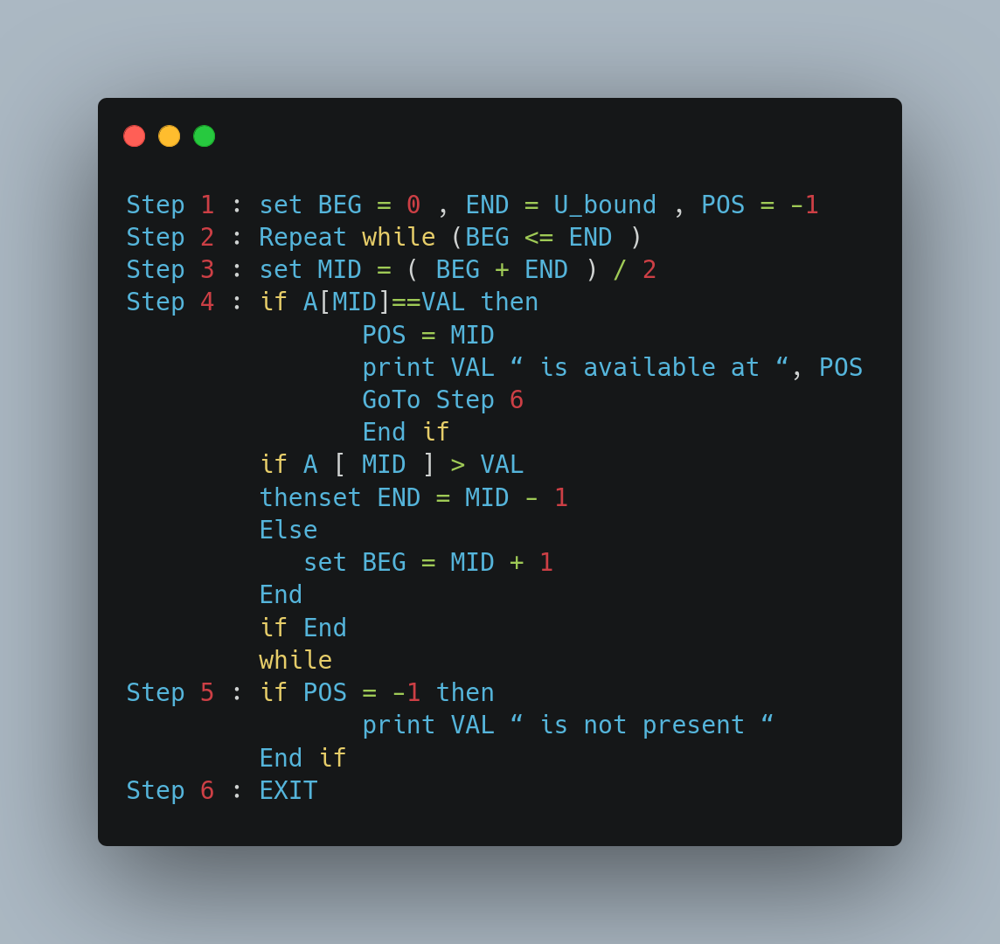

Practical 1
Aim: Implementation of Linear Search and Binary Search Technique
Theory
What is search?
Search is a process of finding a value in a list of values. In other words, searching is the process of locating given value position in a list of values.
Linear Search Algorithm (Sequential Search Algorithm)
Linear search algorithm finds a given element in a list of elements with O(n) time complexity where n is total number of elements in the list. This search process starts comparing search element with the first element in the list. If both are matched then result is element found otherwise search element is compared with the next element in the list. Repeat the same until search element is compared with the last element in the list, if that last element also doesn't match, then the result is "Element not found in the list". That means, the search element is compared with element by element in the list.
Linear search is implemented using following steps...
- Read the search element from the use
- Compare the search element with the first element in the list
- If both are matched, then display "Given element is found!!!" and terminate the function
- If both are not matched, then compare search element with the next element in the list
- Repeat steps 3 and 4 until search element is compared with last element in the list
- If last element in the list also doesn't match, then display "Element is not found!!!" and terminate the function
Binary Search
Before searching, the list of items should be sorted in ascending order. First comparethe key value with the item in the mid position of the array. If there is a match, we can return immediately the position. if the value is less than theelement in middle location of the array, the required value is lie in the lower half of the array
If the value is greater than the element in middle location of the array, the required value is lie in the upper half of the array. We repeat the above procedure on the lower half orupper half of the array
Algorithm:
